Ryomen Sukuna
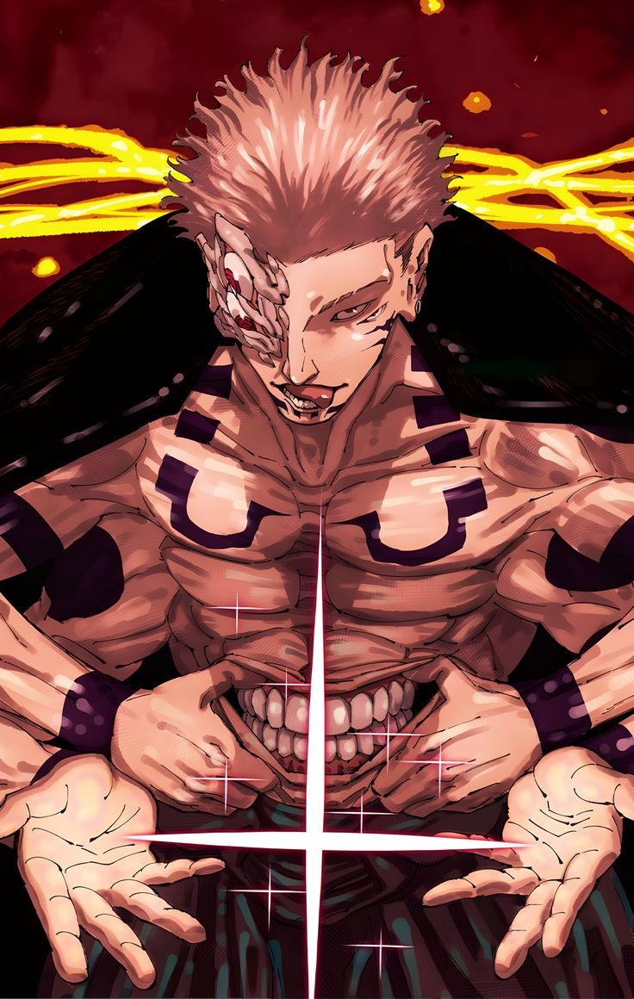
Ryomen Sukuna (両面宿儺) is the main antagonist in Gege Akutami’s Jujutsu Kaisen series. Nicknamed the “King of Curses,” he is the strongest jujutsu sorcerer in history, who lived during the Heian period (about 1,000 years ago). Out of boredom, he split his soul into 20 indestructible cursed fingers. His soul was reawakened in the modern era after a teenager named Yuji Itadori swallowed one of his fingers.
Cursed Spirits
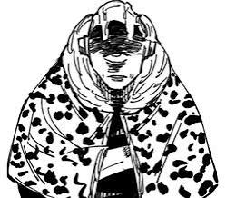
Special GradeJogo
A volcano-headed curse born from humanity’s fear of the land, with devastating fire techniques.
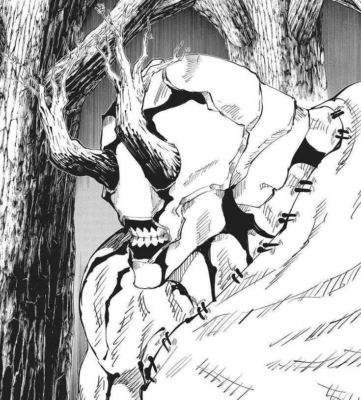
Special GradeHanami
A tree-like curse that grows from fear of forests and the natural world.
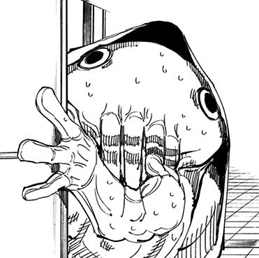
Special GradeDagon
A sea curse born from fear of the ocean, capable of flooding a battlefield.
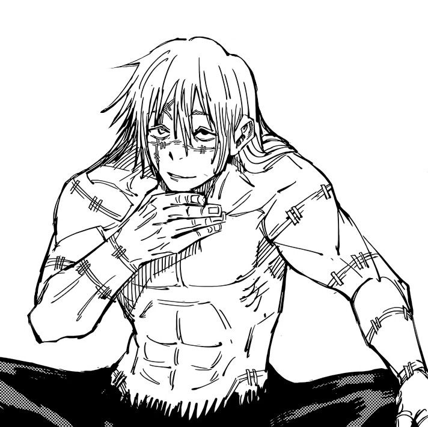
Special GradeMahito
A curse born from human hatred who reshapes souls and treats cruelty as a game.
Dangerous Humans
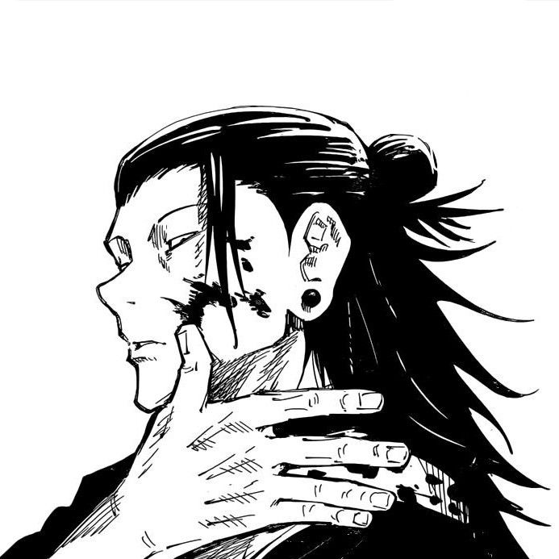
AntagonistSuguru Geto
A former sorcerer who commands a huge collection of captured curses.
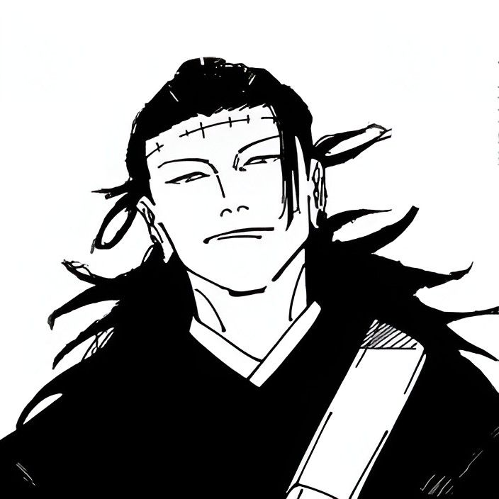
MastermindKenjaku
The architect of the Culling Game and a long-running schemer.
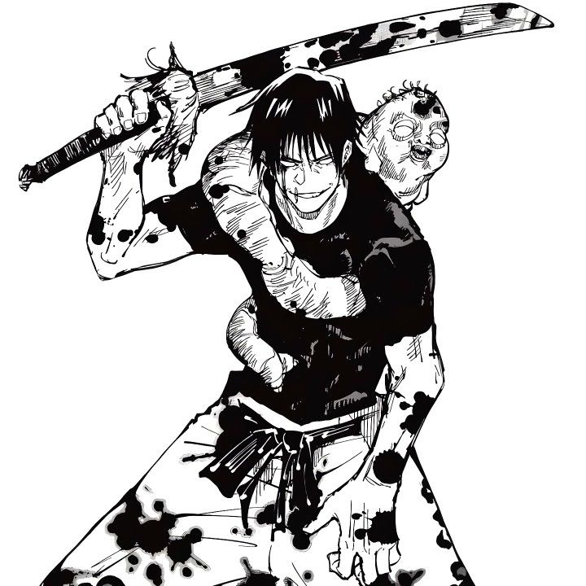
AssassinToji Fushiguro
A man with no cursed energy and superhuman strength, famous for killing sorcerers.
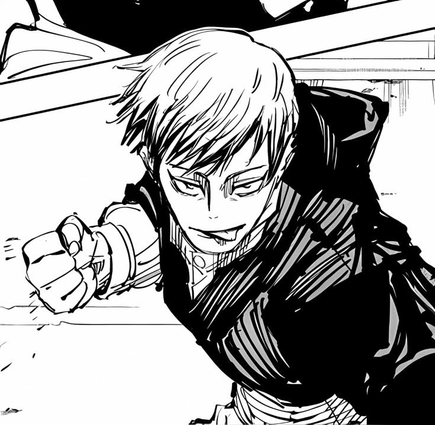
ZeninNaoya Zenin
A fast, arrogant member of the Zenin clan with a speed-based technique.
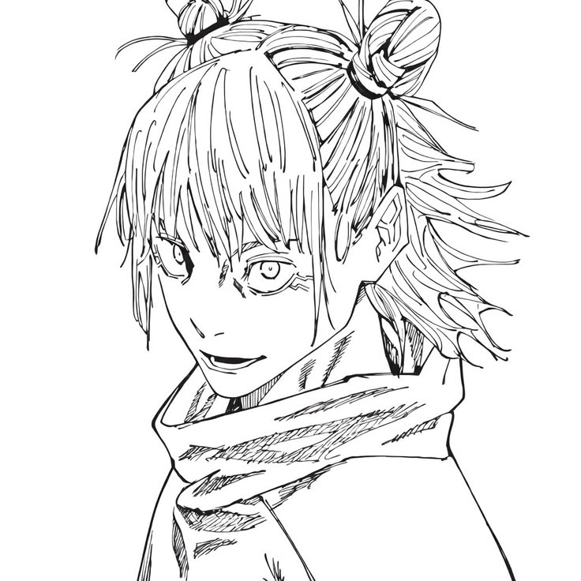
Culling GameHajime Kashimo
A lightning-based fighter who joins the Culling Game just to find strong opponents.
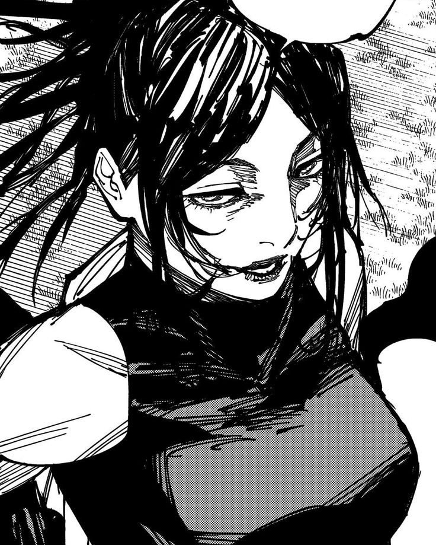
Culling GameYorozu
A sorcerer from an earlier era who appears as a player in the Culling Game.